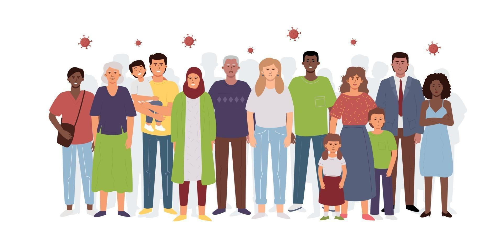

- Goi-mailako ikasketak egiteko, honako baldintza hauetakoren bat bete behar da:
- Hezkuntzari buruzko maiatzaren 3ko 2/2006 Lege Organikoan ezarritako batxiler-titulua izatea.
- Lanbide Heziketako Teknikari edo Goi Teknikari titulua izatea.
- Batxilergoko irakasgai guztiak gainditu izana egiaztatzen duen ziurtagiria.
- Goi-mailako heziketa-zikloetan sartzeko proba gainditu izana, ziklo horren lanbide-familiari dagokion
aukera
baten bidez.
- Hezkuntza Sistemaren Antolamendu Orokorrari buruzko urriaren 3ko 1/1990 Lege Organikoan ezarritako
batxiler-titulua izatea.
- Lehengo Batxilergo Bateratu Balioanizduneko (BBB) ikasi eta gero emandako batxiler-titulua izatea.
- Teknikari espezialista titulua izatea.
- Unibertsitate-titulua izatea.
- Unibertsitatera Bideratzeko Ikasturtea (UBI) edo unibertsitate-aurrekoa gainditu izana.
- Unibertsitatean sartzeko 25 urtetik gorakoentzako sarrera-proba gainditu izana.
- Batxilergo Esperimentaleko edozein modalitatetan 2. kurtsoa gainditu izana.
- Atzerriko ikasketak lehenago zerrendatutako tituluren batekin homologatzeko egiaztagiria.
- Ikasketak amaitzen ditudanean, zer egin dezaket?
- Prebentzio eta gizarteratzeko programetako teknikaria.
- Hainbat motatako egoitza-ekipamenduen hezitzailea edo hezitzailea.
- Familiako langilea edo langilea.
- Tutoretzako laguntzailea.
- Gizarteratzeko teknikaria.
- Hezkuntza bereziko hezitzailea.
- Desgaitasuna duten pertsonen monitorea edo monitorea.
- Mugikortasuneko oinarrizko teknikaria.
- Lanbideko eta/edo lan bitartekaria.
- Komunitateko bitartekaria edo bitartekaria. eta/kulturartekotasuna.
- Lagundutako enplegu-teknikaria.
- Lan laguntzako teknikaria.
- Errehabilitazio psikosozialeko monitorea
